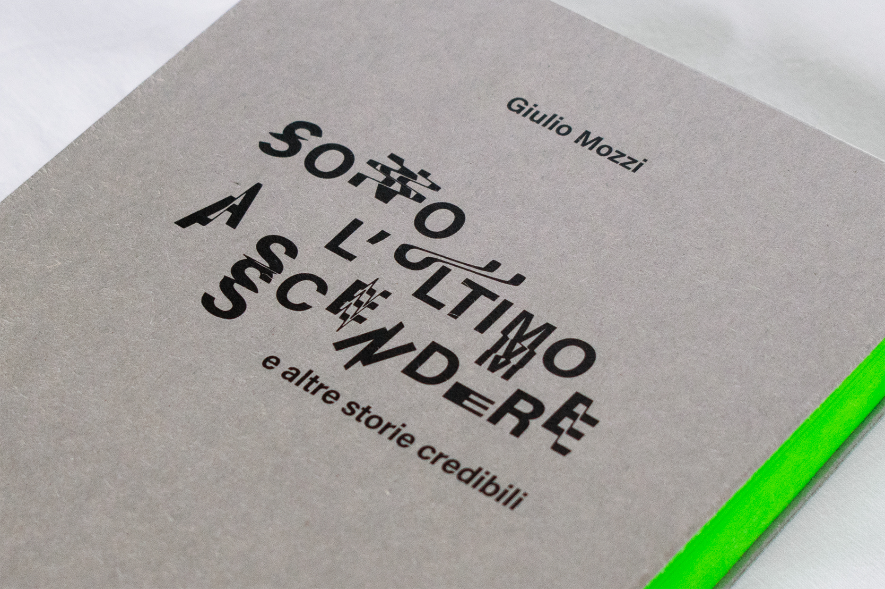
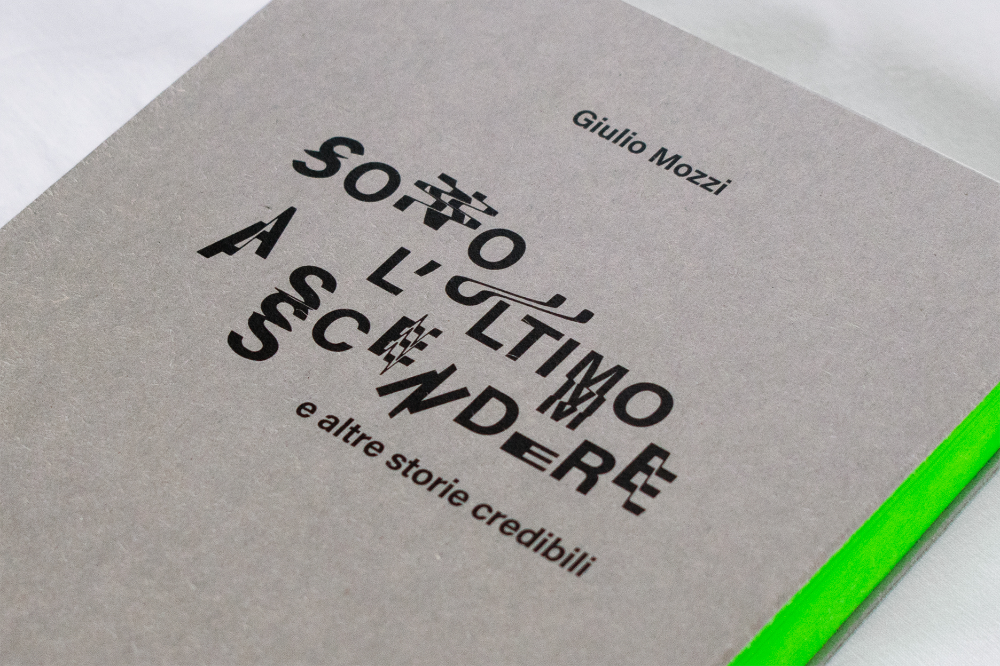

Libro visivo Sono l'ultimo a scendere (e altre storie credibili)
Dettaglio della copertina del libro visivo

Dettaglio della confezione del libro visivo


Dettagli del layout e del trattamento tipografico delle pagine interne del volume
Libro visivo Sono l'ultimo a scendere (e altre storie credibili)
Dettaglio della copertina del libro visivo
Dettaglio della confezione del libro visivo
Dettagli del layout e del trattamento tipografico delle pagine interne del volume
Libro Visivo
Obiettivo del laboratorio era la progettazione di un libro visivo le cui caratteristiche grafiche e materiali potessero rispecchiare la natura del contenuto stesso. Si è lavorato su Sono l’ultimo a scendere (e altre storie credibili) di Giulio Mozzi, un diario della vita quotidiana del protagonista.
Attraverso il layout della pagina è stata tradotta visivamente la forma narrativa del dialogo, prevalente nei racconti. Queste interazioni sono però caratterizzate da un'assurdità, provocata dall'incapacità di comunicare degli interlocutori, raccontata invece attraverso la tipografia e la sua manipolazione.
La tensione tra banalità quotidiana e follia è stata tradotta nelle scelte cromatiche dei materiali per la confezione.
Questo progetto è stato analizzato nella sua interezza nella tesi presentata a conclusione della Laurea Triennale in Design della Comunicazione.
Laboratorio di Sintesi Finale
Proff. M. Piazza, M. Pea, L. Pitoni
A.A. 2019/2020
Progetto di:
Marta Sironi